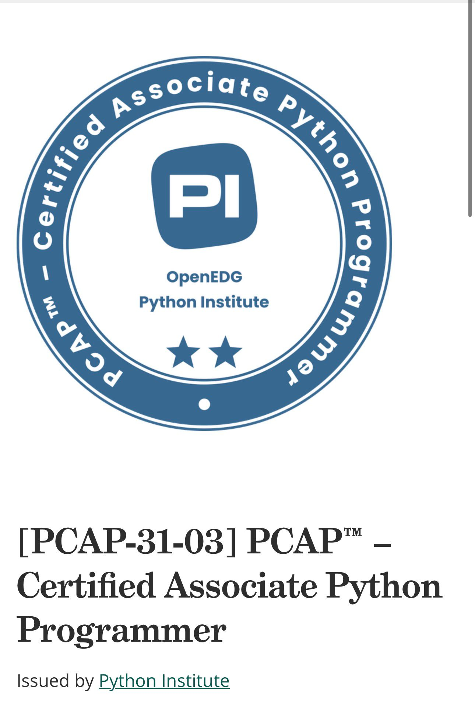
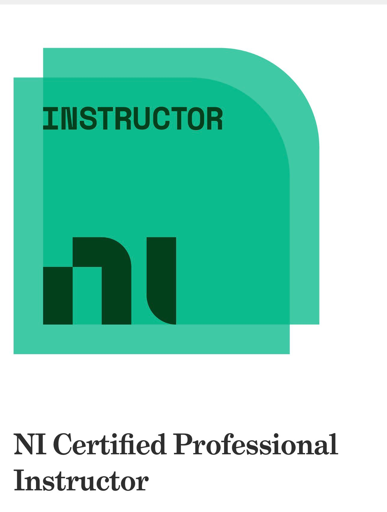

Settore automotive
Sviluppo software per sistemi e applicazioni legate al mondo automotive, con attenzione a stabilità, integrazione e qualità del codice.
Ditta specializzata nello sviluppo di siti web professionali per professionisti, studi e attività che desiderano presentarsi online in modo serio, ordinato e credibile.
CLM Automation realizza siti web basandosi su competenze tecniche solide e certificate. Le certificazioni ottenute attestano un livello avanzato di preparazione nello sviluppo software e nell’ingegneria delle applicazioni.
Non si tratta di soluzioni improvvisate, ma di progetti costruiti con metodo, conoscenze aggiornate e un approccio professionale orientato alla qualità.

Certificazione avanzata nello sviluppo con Python

Certificazione professionale e formazione tecnica qualificata
Esperienza
Le competenze maturate derivano da esperienza diretta nello sviluppo software in ambiti ad alta complessità tecnica, dove affidabilità e precisione sono fondamentali.
Sviluppo software per sistemi e applicazioni legate al mondo automotive, con attenzione a stabilità, integrazione e qualità del codice.
Esperienza in contesti ad alta affidabilità, dove precisione, controllo e robustezza delle soluzioni sono essenziali.
Sviluppo in ambienti critici e strutturati, con elevati standard di sicurezza, qualità e gestione dei processi.
Recensioni
Recensioni reali da Google
Competenza reale
In un contesto in cui molti servizi vengono proposti in modo automatico o superficiale, scegliere professionisti reali con formazione tecnica, esperienza concreta e responsabilità diretta sul lavoro svolto rappresenta un valore importante.
L’intelligenza artificiale può essere uno strumento utile, ma da sola non sostituisce competenza, metodo, capacità di analisi e visione progettuale.
Un sito web efficace non nasce da soluzioni improvvisate, ma da esperienza, conoscenze strutturate e attenzione reale agli obiettivi del cliente.
Per questo CLM Automation si presenta con un profilo tecnico chiaro, verificabile e fondato su titoli reali, formazione certificata e attività professionale concreta.
Contatti
Se desideri una presenza online più curata e professionale, puoi contattarci per maggiori informazioni.